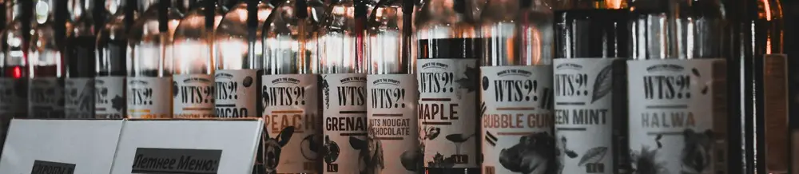

Cara Membuka Tutup Botol Logam Tanpa Pembuka: Menggunakan Gantungan Kunci Multifungsi!
Dipublikasikan pada 12 Agustus 2025

Generasi 90-an pasti tidak asing dengan aneka minuman dalam botol kaca dengan tutup logam. Berbagai jenis minuman, mulai dari sirup, soda, hingga ready to drink (RTD) lokal, seringkali menggunakan kemasan ini. Terkadang, botol-botol ini bahkan harus dikembalikan untuk diisi ulang dan dijual kembali.
Meskipun saat ini penggunaan botol kaca dengan tutup logam sudah mulai berkurang karena produsen beralih ke botol plastik demi efisiensi dan keamanan pengiriman, beberapa merek sirup lokal masih setia menggunakannya. Contohnya, sirup TBH dari Yogyakarta, sirup Manggis dari Kudus, dan sirup Kartika dari Grobogan, Jawa Tengah.
Jadi, mari kita coba membuka tutup botol logam dari sirup lokal ini dengan cara yang tidak biasa: menggunakan gantungan kunci multifungsi! Gantungan kunci ini juga dilengkapi dengan lampu LED darurat. Berikut adalah langkah-langkah mudahnya:
Langkah-Langkah Membuka Tutup Botol dengan Gantungan Kunci
- Buka Segel Sirup: Pertama, gunakan bagian kecil yang menonjol pada pangkal gantungan kunci untuk membuka segel plastik tipis. Goreskan bagian tersebut hingga segel terkoyak, lalu tarik hingga terbuka.
- Posisikan Gantungan Kunci: Cari bagian gantungan kunci yang menjorok ke dalam. Posisikan bagian dengan sudut yang lebih tajam untuk mencongkel bagian bawah tutup botol.
- Congkel Tutup Botol: Gerakkan gantungan kunci dari arah bawah ke atas. Anda mungkin perlu mencoba beberapa kali sambil sesekali menggeser posisi gantungan kunci.
- Tutup Terbuka: Setelah beberapa bagian tutup mulai terangkat, akhirnya tutup botol pun bisa terbuka.
- Nikmati Sirup: Sirup kini siap dituangkan ke dalam gelas, dicampur dengan air dan es batu.
Mudah, bukan? Meskipun prosesnya mungkin lebih lama daripada menggunakan pembuka tutup botol khusus, cara ini tetap layak dicoba, terutama jika Anda hanya memiliki gantungan kunci multifungsi di tangan. Ini adalah solusi praktis saat Anda butuh membuka botol secara darurat.
Video tentang proses membuka tutup botol menggunakan gantungan kunci dapat ditonton di bawah ini. Semoga bermanfaat!